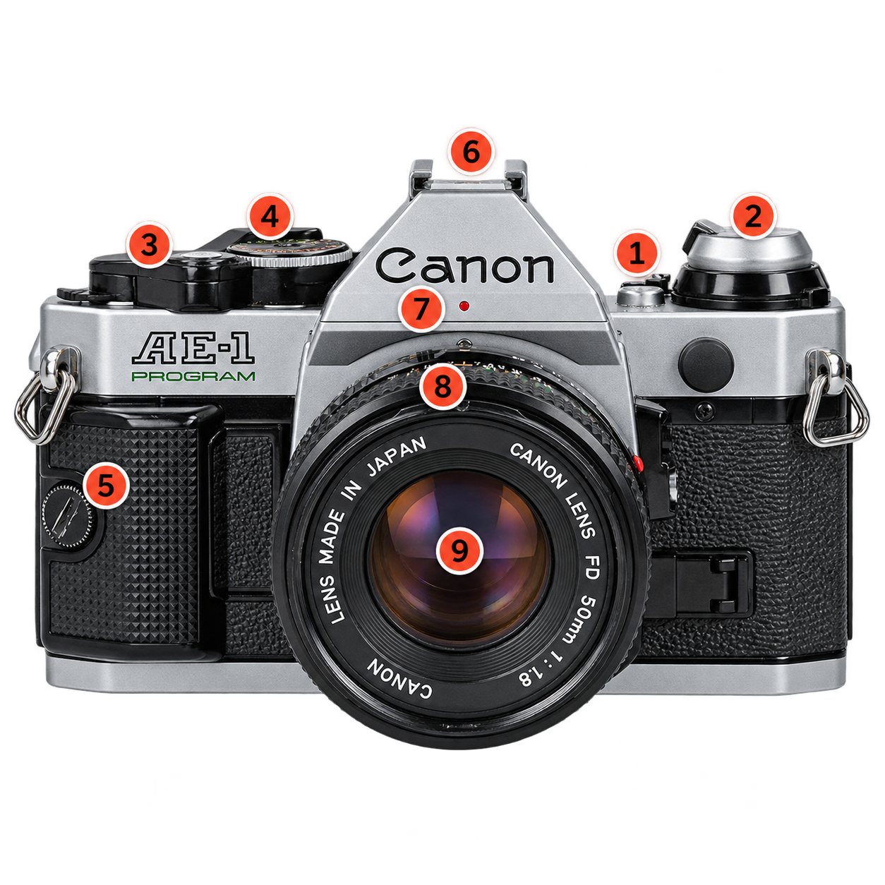
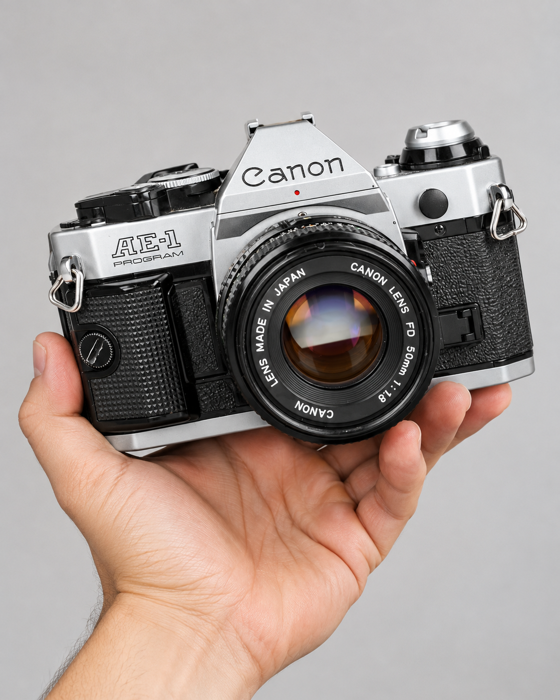

Mein Lieblingsobjekt
Canon AE-1
Eine Spiegelreflexkamera aus dem Jahr 1976 – und der Grund, warum ich analog fotografiere.
Bedienelemente entdecken ↓ Zur Galerie →01 So funktioniert sie
Neun Bedienelemente
Wähle eine Nummer in der Liste, um zu erfahren, was dieses Bedienelement macht.

01 Verschlusszeitenrad
Bestimmt, wie lange Licht auf den Film fällt: von 1/1000 s bis 2 s, dazu «B» für Langzeitbelichtungen.
02 ISO
Hier stelle ich ein, wie lichtempfindlich mein Film ist (z. B. 400).
03 Auslöser
Öffnet den Verschluss und erzeugt das Bild. Halb gedrückt schaltet er den Belichtungsmesser ein.
04 Filmtransporthebel
Spannt den Verschluss und schiebt den Film ein Bild weiter. Ohne dieses Vorgehen, gibt es kein nächstes Foto.
05 Rückspulkurbel
Nach dem letzten Bild spule ich damit den Film zurück in die Patrone, bevor ich die Kamera öffne.
06 Sucher
Durch ihn sehe ich genau, was das Objektiv sieht. Eine Nadel zeigt mir die passende Blende an.
07 Belichtungsmesser
Misst das Licht und wählt bei eingestellter Zeit automatisch die Blende (Zeitvorwahl). Das «AE» im Namen steht für «Auto Exposure».
08 Blendenring
Regelt, wie weit sich das Objektiv öffnet (f/1.8 bis f/22). Auf «A» übernimmt die Kamera.
09 Fokusring
Durch Drehen stelle ich scharf. Die Skala zeigt die Entfernung in Metern.

02 Meine Geschichte
Gebaut im Jahr 1976, bis heute in Gebrauch.
Im Jahr 2022 ersteigerte ich diese Kamera über Ricardo von einem älteren Herrn. Damals ahnte ich noch nicht, dass mit diesem kleinen Stück Vergangenheit eine grosse Leidenschaft beginnen würde. Seither begleitet sie mich durch verrückte Partynächte, Kaffeekränzchen mit meinen Freundinnen und emotionale Momente, wie den 80. Geburtstag meines Nanis.
- 1976 Erstes Baujahr
- 1/1000 s Kürzeste Zeit
- 36 Bilder pro Film